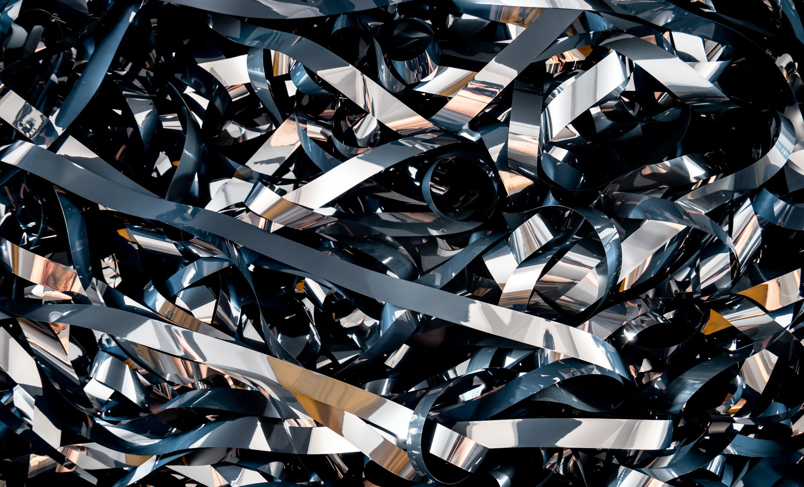

中 광물통제, AI·로봇 소재까지 전선 확대

중국은 2025년 4월 네오디뮴·디스프로슘 등 희토류 영구자석 소재에 대한 수출허가제를 추가 발동했다. 네오디뮴 자석은 산업용 로봇 서보모터, EV 구동모터, 풍력발전기에 필수 소재로, 중국이 글로벌 생산의 약 85%를 장악하고 있다.
한국의 네오디뮴 자석 연간 수입 규모는 약 3,500억 원(2024년 기준)으로, 이 중 중국산 비중이 70% 이상이다. 특히 협동로봇·휴머노이드 로봇용 소형 서보모터에 사용되는 고성능 자석의 경우 대체 공급처가 일본(신에츠화학·TDK) 외에 사실상 없다.
중국의 통제 확산 패턴은 반도체 소재(갈륨·게르마늄, 2023년)→광학 소재(인듐, 2024년)→에너지·로봇 소재(희토류 자석, 2025년) 순으로 진행되고 있다. 산업별 통제 간격이 평균 6~12개월로 단축되는 추세다.
AI 서버 냉각재로 쓰이는 헬륨도 중국이 수출 통제를 시사하며 공급 불안을 키우고 있다. 헬륨은 반도체 식각·냉각 공정에 필수적이며, 한국의 헬륨 수입 중 중국 경유 물량이 30% 수준으로 추산된다.
중국의 통제 범위가 반도체→디스플레이→에너지→로봇으로 확전되는 것은, 개별 소재 단위 대응으로는 한계가 있음을 의미한다. 한국이 '피지컬 AI'(로봇·자율제조)를 차세대 성장동력으로 선언했지만, 그 핵심 부품인 액추에이터용 네오디뮴 자석 조달 체계가 취약한 상태다.
통제 간격이 줄어든다는 것은 중국이 협상 카드로 사용하는 방식에서 실제 공급망 절단 전략으로 전환했음을 시사한다. 과거에는 가격 교란으로 상대국의 비용을 높이는 방식이었다면, 이제는 허가 자체를 막아 공급망 접근을 원천 차단하는 방식으로 무기화 수준이 높아졌다.
일본의 신에츠화학과 TDK는 비중국 희토류 자석 공급사로서 수혜 포지션을 강화하고 있다. 신에츠화학은 베트남·미국에 네오디뮴 자석 생산라인을 보유하고 있으며, 한국 로봇 기업들의 공급 다변화 문의가 2025년 이후 3배 이상 늘었다는 현장 정보가 있다.
호주의 Lynas Rare Earths는 말레이시아 정제 공장을 통해 비중국 네오디뮴·프라세오디뮴 공급 능력을 연 5,000t 수준으로 확보하고 있다. 한국의 소부장 1700억 지원 정책과 연계한 장기 조달 계약 체결이 현실적 옵션으로 부상하고 있다.
현대로보틱스·레인보우로보틱스·두산로보틱스 등 국내 협동로봇 3사는 서보모터용 고성능 자석의 70% 이상을 중국산에 의존하고 있어 직접적 공급 차질 리스크에 노출됐다. 대체 공급처 전환에 필요한 퀄리피케이션(품질인증) 기간이 통상 6~12개월이어서, 수출허가 지연 시 납기 차질이 현실화된다.
방산 분야도 예외가 아니다. K-2 전차 구동모터, 무인기(드론) 추진 시스템에 네오디뮴 자석이 광범위하게 사용된다. 방산 기업의 경우 대체 소재 검증에 18~24개월이 소요되어 조달 리스크가 민수보다 더 장기적으로 이어진다.
로봇·방산 분야 투자자는 해당 기업의 네오디뮴 자석 조달처 다변화 현황을 반드시 점검해야 한다. 일본·호주산 대체 조달 비중 20% 이상 확보 여부가 핵심 체크포인트다.
기업 구매담당자는 일본(신에츠화학·TDK), 호주(Lynas) 두 공급처와 즉시 가격 협의를 시작하되, 퀄리피케이션 비용을 감안해 최소 18개월치 재고 확보를 병행해야 한다. 현물 시장에 의존하면 수출허가 지연 때마다 납기 협상력을 잃는다.
정부의 소부장 1700억 지원 중 희토류 자석 재활용(도시광산) 기술 과제는 단기 대응책으로 유효하다. 폐모터에서 네오디뮴을 회수하는 국내 기술(성일하이텍 등)을 활용하면 중국 의존도를 3~5년 내 10%p 이상 낮출 수 있다.
실제 조달 현장에서는 — 네오디뮴 자석 공급사들이 '수출허가 불확실성 조항'을 계약서에 삽입하기 시작했다. 즉 중국 정부가 허가를 지연하면 납기 위반 책임을 면하는 조항인데, 이는 공급사 스스로도 공급 안정성을 보장하지 못한다는 신호다. 계약 협상 시 이 조항을 반드시 확인하고, 페널티 구조 대신 대체 공급사 자동 전환 조항을 넣도록 요구해야 한다.
이 포스팅은 쿠팡 파트너스 활동의 일환으로 수수료를 제공받습니다.